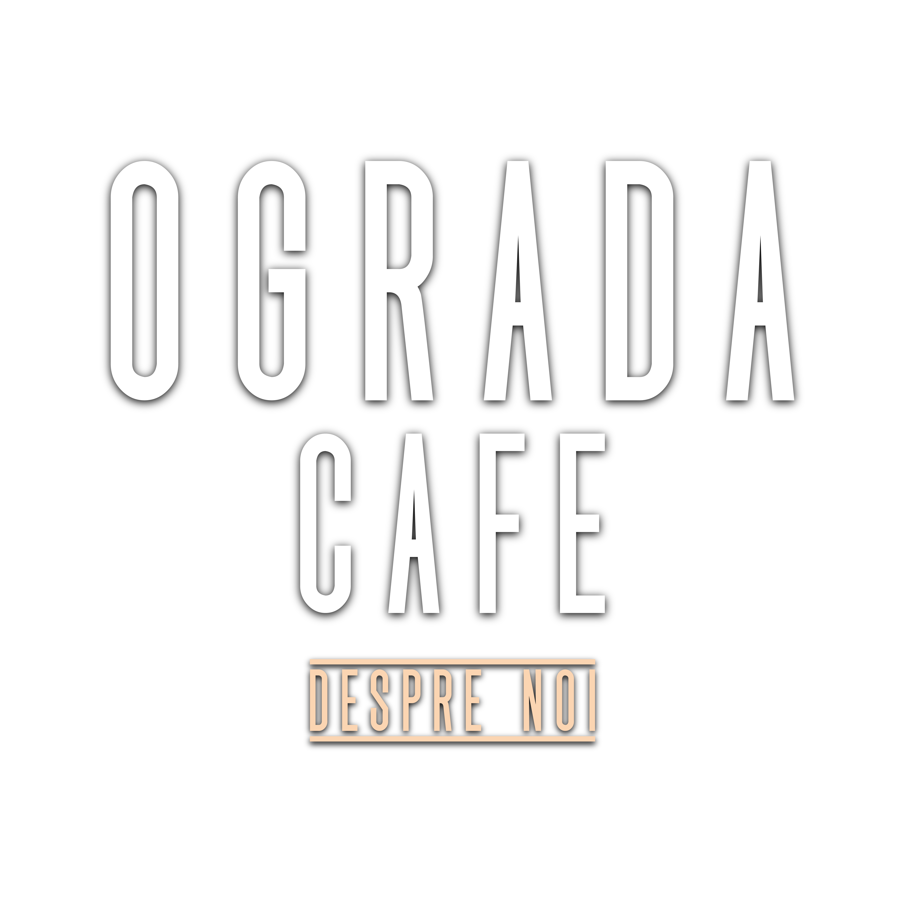

SINCE
2022

SINCE
2022
La conceptul localului s-a muncit timp de câteva luni. Majoritatea elementelor de decor, dar și o parte din mobilier, a fost creat manual. Ușile au fost pictate de proprietara cafenelei, Olga Holban. Tânăra susține că și-a dorit ca fiecare element să aibă suflet, așa cum are fiecare OGRADĂ. Mesele din cafenea au fost create din ștachetele din lemn ale unui gard vechi din ograda părinților din sat. Timp de aproape 35 de ani, ograda în care a copilărit proprietara a fost împrejmuită de acest gard, care este un simbol al copilăriei.
Denumirea localului - OGRADA se potrivește perfect conceptului cafenelei. Este o denumire autentică și transmite mesajul principal al locului. Când spui OGRADA, te gândești la oamenii tăi: părinți, bunici, poate chiar verișori, prieteni, vecini, cumetri. Inclusiv, te gândești la copacii de vișin, florile de mai, nucile aromate, mirosul ploii și pământul fierbinte de sub picioare.